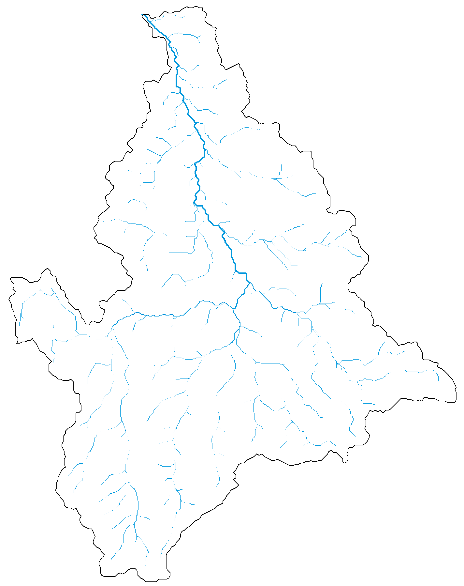

An introduction to rivnet
Luca Carraro
rivnet.Rmd#> Warning in rgl.init(initValue, onlyNULL): RGL: unable to open X11 display
#> Warning: 'rgl.init' failed, running with 'rgl.useNULL = TRUE'.Overview
rivnet enables a seamless R-based extraction of river
networks and watershed data from Digital Elevation Models (DEMs) without
the need to install and operate GIS software. It is primarily intended
as a riverscape-analyzing tool for subsequent ecological, hydrological
and biogeochemical modelling.
Features:
- Analyze user-provided DEMs or automatically downloaded from open source repositories
- Identify flow directions by implementing TauDEM’s D8 flow direction algorithm
- Delineate reaches, subcatchments, lengths, slopes and areas
- Calculate along-stream distances between network nodes
- Attribute sites to a river network
- Evaluate covariates at subcatchment level from user-provided raster files
- Derive hydraulic and hydrological variables across a network from point measurements
rivnet produces river objects, which are compatible with
the OCNet package, and can hence be analyzed and displayed
with OCNet functions. As such, river objects
can be made compatible with the igraph and SSN
packages.
Installing the package
rivnet can be installed from CRAN:
install.packages("rivnet")The development version can be installed from Github:
devtools::install_github("lucarraro/rivnet")Among other packages, rivnet depends on the
traudem package, and in turn, on the TauDEM library.
traudem provides a guide to correct installation of TauDEM
and its dependencies for different operating systems, and offers wrapper
commands to call TauDEM methods from R. Please read the
traudem documentation
carefully.
Workflow
Functions and output from packages rivnet and
OCNet are interoperable according to the following
workflow:
Overview of rivnet and OCNet functions.
aggregate_river, paths_river,
river_to_igraph and river_to_SSN are aliases
for aggregate_OCN, paths_OCN,
OCN_to_igraph and OCN_to_SSN, respectively;
path_velocities_river requires paths_river and
one between hydro_river and rivergeometry_OCN.
The main function of rivnet is
extract_river. This function analyzes a DEM and generates a
river object. Necessary inputs are either an user-provided
DEM or the extent of a region where DEM data should be downloaded from
open-source repositories (via the elevatr package); and the
coordinates of the outlet(s) of interest. extract_river can
also be used as a wrapper for the TauDEM set of functions extracting D8
flow directions and contributing area:
Workflow of TauDEM functions used by extract_river. Refer
to the TauDEM documentation for details on these functions.
river objects obtained from extract_river
can then be processed by aggregate_river (which builds a
river network at different aggregation levels) and
paths_river (which calculates paths and path distances
between network nodes). Refer to the OCNet documentation
for details on the definition of aggregation levels and the behavior of
these functions.
A minimal example
Extract a river (Wigger, Switzerland) from an user-provided DEM:
fp <- system.file("extdata/wigger.tif", package = "rivnet")
r <- extract_river(outlet = c(637478, 237413), DEM = fp)
r
#> Class : river
#> Type : Real river
#> No. FD nodes : 8768
#> Dimensions : 195 x 242
#> Cell size : 208.23
#> Has elevation : TRUE
#> Aggregated : FALSE Outlet coordinates must be expressed in the same coordinate system as the input DEM.
The same river can be extracted starting from DEM data downloaded from open-source servers:
r2 <- extract_river(outlet = c(637478, 237413),
EPSG = 21781, #CH1903/LV03 coordinate system
ext = c(6.2e5, 6.6e5, 2e5, 2.5e5),
z = 10)
plot(r2)
A plot method has been defined for river
objects, which calls different drawing functions from the
OCNet package. Its default behavior depends on the
attributes included in the river object:
r2 <- aggregate_river(r2)
plot(r2)
In the first case, plot calls
draw_simple_OCN; in the second case, it calls
draw_thematic_OCN.
For computational speed issues, the examples provided are derived
from rather coarse DEMs. To increase the resolution of the DEM (and thus
of the resulting river), it is possible to increase the
z value in extract_river (see
elevatr documentation for details).
Other functions
-
locate_site: finds the river network node that is closest to a given site (identified by its coordinates). Attribution can be performed either as the crow flies, or following the steepest descent. It is possible to use thelocator()function to identify the input coordinates by directly clicking on a river plot. -
covariate_river: attributes covariate values from user-defined raster files to subcatchments of a river network. Both local and upstream-averaged covariate values are calculated. Covariates can be either categorical (e.g., land cover classes) or continuous (e.g., temperature values). -
hydro_model: assigns hydraulic variables (width, river depth, water discharge, and derived variables) to all nodes of a network starting from a minimal number of measured values, and based on power-law scaling relationships and uniform flow equations (Gauchler-Strickler-Manning). It can deal with non-rectangular cross-sections (and hence varying width as a function of discharge).